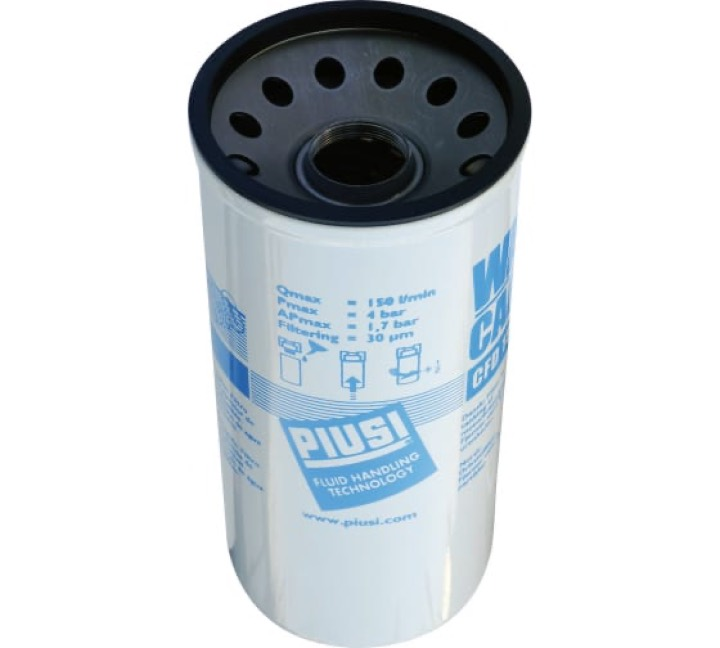

Сменный водопоглощающий картридж 70л/мин для фильтра F00611A00 (второй артикул F00611010)
Раздел: Фильтра для раздаточных комплектов · АЗС
Цена и наличие — по запросу. Поставляем оригинал и аналоги. Доставка по России.
Описание
Сменный водопоглощающий картридж 70л/мин для фильтра F00611A00 (второй артикул F00611010) — позиция из раздела «Фильтра для раздаточных комплектов» для АЗС. Компания SYNDICAT поставляет оборудование и комплектующие для автозаправочных и газозаправочных станций по всей России. Цена и наличие «Сменный водопоглощающий картридж 70л/мин для фильтра F00611A00 (второй артикул F00611010)» — по запросу: оставьте заявку или позвоните, подберём оригинал или аналог и рассчитаем доставку.